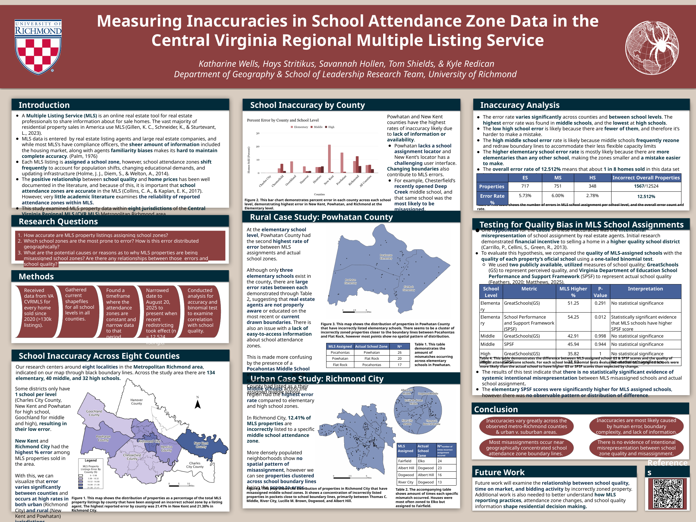

Why MLS data accuracy matters
School attendance zones connect housing markets to access to public education. Real estate platforms make these assignments visible to families as they consider residential location. Even when individual listing errors are accidental, they can shape expectations about school access.
We therefore examined the accuracy of public school assignments recorded in Multiple Listing Service (MLS) sales data against independently verified geographic boundaries.
School-assignment discrepancies · approximate share
Research design
The study focuses on home sales from August 2025 through June 2026. Properties were geocoded, then spatially joined to elementary, middle, and high school attendance boundaries. In R, we compared the assigned school in each MLS record with the school determined by geographic location.
Geocode property locations and prepare verified attendance-zone layers.
Compare MLS-reported assignments with spatially determined schools at three levels.
Examine jurisdictional differences and test whether errors point systematically toward higher-rated schools.
Comparisons of school ratings were exploratory. Errors alone do not establish intentional misrepresentation or a motivation on the part of a listing agent.
What we found
Approximately one in eight sales in the study had at least one school assignment that differed from the spatially verified assignment. The proportion varied by jurisdiction and school level.
| Study measure | Scope | Result |
|---|---|---|
| Residential sales | August 2025–June 2026 | 12,524 |
| Sales with ≥1 discrepancy | Across school levels | ~12.5% |
| Jurisdictions represented | Metropolitan Richmond | 8 |
Public school assignments are consequential housing information, and even a modest-looking data field deserves systematic verification.
Interpreting the evidence
The study describes a defined geographic area and time period; it is not an estimate of error rates for all U.S. listings. Attendance-zone boundaries can change, so verification depends on the appropriate boundary vintage. We did not find consistent evidence that discrepancies systematically favor higher-rated schools across all school levels and rating measures.
These distinctions are important for making the project useful to brokers, school districts, and families without overstating what the analysis can support.
Research status
Collaborative 2026 research, developed into presentations and a journal manuscript draft. The analysis is being refined for peer review and for a clearer discussion of data provenance, reproducibility, and practical implications.
Original files & maps
The documents and figures below are taken from the original research files. Their authorship and status are preserved; these are not AI-created research graphics.
- MLS Symposium Poster (1)(2).pptxResearch poster · original PowerPoint
Contains the original county comparisons and research visuals.
Author / team: Katharine Wells, Hays Stritikus, Savannah Hollen, Tom Shields, and Kyle Redican - Our SEDAAG Presentation (1).pptxConference presentation · original PowerPoint
Source slide deck with original analysis and figures.
Author / team: Katharine Wells and Kyle Redican - SEDAAG_MLS_Presentation_Draft.pdfPresentation draft · PDF
Draft slide version; not a substitute for a final conference presentation.
Author / team: Katharine Wells and Kyle Redican
Any map showing mismatched MLS school assignments must come from a research-team-approved original image or slide; property-level locations require a public-release review.
No AI-generated images, invented GIS outputs, fabricated figures, or reconstructed research maps are used on this page.
